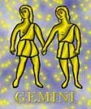

<html>
<head>
<title>Ikrek</title>
<script type="text/javascript" src="js/public.js"></script>
<script type="text/javascript" src="js/subpage.js"></script>
<script language="JavaScript1.1">
IMG_PICT="images/inte/horo/" 
horopict = ""
var subpage = new Array(
horopict+"Kettõs jegy, amely tulajdonságukban is megmutatkozik. Érdeklõdése szerteágazó, nem elégszik meg egy terülten elért sikerrel. Lételeme a kommunikáció, a jövés-menés, a nagy nyüzsgés, örök rohanás. Kitûnõ észbeli képességekkel rendelkezik, észjárása gyors, logikus, tiszta, a legváratlanabb helyzetekben is gyorsan feltalálja magát. Természete kitûnõ, ügyes, engedékeny. Született idealista, nehéz vele komoly dologba kezdeni. Csapongó, változékony, felületes. Simulékony, soha nem rosszindulatú, nem bosszúálló, távol áll tõle, hogy valakinek ártson. Az elesettekkel mélyen együtt érez, részvétét szavakban is kifejezésre juttatja. Nem fél a valóságtól. Levegõ-jegy, pozitív töltés, változó minõség. Az állatöv harmadik jele az Ikrek. Jele a (dualitás) kettõsség szimbóluma. A levegõ-elemhez tartozik, melynek jelzését, a két vonalat, a párhuzamost tartalmazza. Az Ikrek a változó kereszthez tartozik, ami változékonyságot, a kitartás hiányát jelenti. Az uralkodó bolygója a Merkúr. A levegõ-elem és a változó õsminõség a jel örökös mozgására utal. Az Ikrek jel az emberben az egyetemes tudásvágyat, a kielégíthetetlen megismerési és kutatási ösztönt jelenti. Az Ikrek számára nem jelent különösebb örömet valakinek, vagy valaminek a puszta birtoklása, részletesen meg akarja ismerni a személyeket és tárgyakat. No és persze az egész világot. ",
horopict+"Az Ikrek vándorló természetû. Mindent megismerni: ez a jel célkitûzése. A világmindenség természetébõl adódik, hogy ezt a célt megvalósítani lehetetlen. A szétforgácsolódás elkerülhetetlen számára. Kezdeti fellángolása, bármi iránt csak szalmaláng természetû. Az Ikreknél is, mint minden pozitív töltésû jelnél, nem öncélként jelentkezik a megismerés. Legalább annyira fontos számára a továbbhaladás, a közvetítés. Nem véletlenül uralkodó bolygója a Merkúr, a hírvivõ. Keresni, kutatni, meggyõzõdni, továbbadni, majd kezdeni elölrõl. Nyugtalanság, kíváncsiság -ez az Ikrek-jelû ember osztályrésze és természetesen minden emberben jelenlévõ Ikrek-tulajdonság. Ha gyermekkorától vizsgáljuk az Ikrek ember egyéniségét, azt tapasztaljuk, hogy ritka esetektõl eltekintve õ az, aki leghamarabb járni és beszélni képes. Ezt a két tehetséget sokáig megtartja. Beszélni mindig sokat beszél, és mozgási kényszere idõs koráig megmarad. Igyekszik mindent gyorsan elvégezni. Általában jól tanul, mert rendkívül gyors a felfogása, olvasottsága és tájékozottsága a világ dolgairól lenyûgözõ. Társaságokban õ a közkedvelt ember. Mindig tud valami aktuális pletykát, érdekes információt. Amennyire szerteágazó a tudása, legalább annyira felületes. Sosem az információk mélysége, hanem mennyisége izgatja. Õ az ember aki képes lyukat beszélni a másik hasába. ",
horopict+"Ezzel nem azt akarjuk mondani, hogy minden Ikrek hazudozó, de mindenképpen szeretnek nagyot mondani. Õk ezt csak ártatlan füllentésnek veszik és csodálkoznak, ha mások megütköznek ezen. A pontosság nem tartozik az erényeik közé. Hasonlóan a Koshoz, õ sem akar semmibõl kimaradni, de ennek a törekvésnek az áll a hátterében, hogy minden hírt, információt össze akar gyûjteni. Az Ikrek kettõs jel. Az Ikrek emberekben mindig jelen van a kettõsség érzése. Semmit sem hisz el, csak úgy, ha utánajár és meggyõzõdik arról, hogy az információ helyes. Ha valamiben kételkedik, rögtön vitára kész és ha úgy érzi, hogy igaza van, addig csuri-csavarja, míg az ellenfél fel nem adja. Egy szónok veszett el benne. Pillanatok alatt képes új teóriák létrehozására, ha úgy érzi, hogy a vitában sarokba szorították. Nem következetes, logikai láncolataiban nem találunk kiépítettséget, ha ez kiderül, témát vált. Semmit sem tudnak magukban tartani. Közlékenységi vágyukból adódik, hogy sokat tudnak beszélni, és gyakran óriási körmondatokban fejezik ki magukat. Az is elõfordul, hogy ha már elmondták, amit akartak, a válaszra már oda sem figyelnek. Ez nem szemtelenség részükrõl, de gondolataik csapongása miatt már máshol járnak. A mozgás- és levegõigénye óriási. Ezért ha teheti, kimegy a szabadba. A hosszas bezártság neurotizálja. Sokáig megtartja fiatalos külsejét és szellemi frissességét. ",
horopict+"Szervezete ellenálló, de idegrendszere nem. Ez a legsebezhetõbb pontja és sajnos az ideggyógyászatra sokan kerülnek az Ikrek közül, elsõsorban azért, mert túlhajtják magukat, nem ismernek határt. Ahogy szokták mondani: \"Két végérõl égetik a gyertyát\". Az Ikrek kiválóan alkalmazkodik a megváltozott körülményekhez. A kapcsolataiban alkalmazkodó, mások elvárásainak megfelelni akaró, de csak addig, míg az illetõ vagy társaság érdekli. Számára a világ a megtanulható ismeretek tárháza. Minden információ, ami érdekli, a jobb eligazodáshoz vezet és az állatövi jegyek sorrendjében õ képviseli a kíváncsi embert. Rendszerezésre nem futja az erejébõl, idejébõl. A Merkúr ennek a jelnek az uralkodó bolygója, mely nem csak a hírvivés és közvetítés istene, hanem a tolvajok és szélhámosoké is. A Merkúr-analógiák alapján mondhatjuk, hogy az Ikrek jelbõl sok tolvaj és szélhámos kerül ki, de ez attól függ, hogy az egyén milyen szinten áll és a születési képében hogyan áll a Merkúr. Mindenesetre az Ikreknek megvan a képessége arra, hogy behízelgõ modorban, bárkinek bármit beadagoljon. Ha akar, akkor a félrevezetés nagymestere tud lenni. Kiváló kézügyességével a legnehezebb feladatokat is elvégzi. Az Ikrek nem tartozik a buta, erõszakos bûnözõk közé, sõt, rendkívüli intelligenciával rendelkezik. Általában jó szervezõ, kereskedõ, és önállóan jól dolgozik, de fõnöknek elég szétszórt. ",
horopict+"A kötöttséget nem nagyon szereti, ezért sem fõnöknek, sem beosztottnak nem elég megbízható. Pontatlan. Minden mozgalmas munkahely megfelel neki, ahol zajlik az élet. Szeret emberek közt lenni, beszélni és érdekes helyzetekkel ismerkedni. Ha csönd van inkább bekapcsolja a rádiót, vagy a magnót, nem viseli el a magányt, bezártságot. Csak intellektuális kapcsolatban érzi jól magát. A szerelem nem igazán neki termett. Amíg a kapcsolat új, addig hevessége és figyelmessége nem ismer határt. Ha kezd az elsõ hév kissé megállapodottá válni, mások iránt kezd érdeklõdni. Ez utóbbi az Ikrek hölgyekre is vonatkozik. A hûség tehát nem tartozik erõsségei közé. Fiatalkorukban kifejezetten sportot ûznek a találkozókból. A szép szavakhoz jobban ért, mint a szexuális vetélkedõhöz. Nem a vére hajtja, csak a kíváncsiság. ",
horopict+"<b>Bolygója:</b> a Merkúr<br>"
+"<b>Eleme:</b> a levegõ<br>"
+"<b>Természete:</b> változékony<br>"
+"<b>Erényei:</b> sokoldalú, gyors észjárású, intelligens, hajlékony, toleráns<br>"
+"<b>Hibái:</b> felületes, csapongó, türelmetlen, ideges<br>"
+"<b>Testrésze:</b> <br>"
+"<b>Betegségre való hajlam:</b> légzõszervi betegségek, ingerlékenység, idegesség, idõsebb korban izületi problémák, idegfájdalmak<br>"
+"<b>Védõkövek:</b> kalcedon, berill<br>"
+"<b>Szerencsekövek:</b> achát, tigrisszem, akvamarin, nemestopáz, smaragd, krizopráz"
);
</script>
</head>
<BODY background="images/public/background/bg1.jpg">
<script language="JavaScript1.1">
	firstdraw("IKREK május 21. - június 21.");
</script>
</body>
</html>